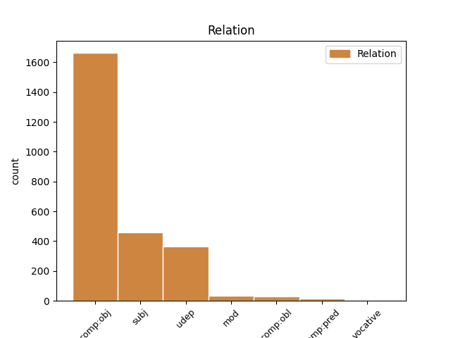
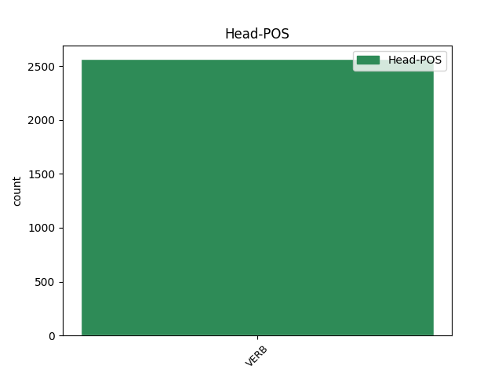
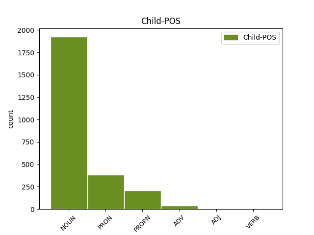

Distribution of features within this leaf



Agreement Rules sorted by frequency.
- When the dependent token is the direct object complements(comp:obj) of the head token, and the head token is VERB and the dependent token is NOUN.
1 वे _ _ _ _ 0 _ _ _
2 मानते _ _ _ _ 0 _ _ _
3 हैं _ _ _ _ 0 _ _ _
4 कि _ _ _ _ 0 _ _ _
5 पाकिस्तान _ _ _ _ 0 _ _ _
6 और _ _ _ _ 0 _ _ _
7 भारत _ _ _ _ 0 _ _ _
8 सरकार _ _ _ _ 0 _ _ _
9 शांति _ _ _ _ 0 _ _ _
10 और _ _ _ _ 0 _ _ _
11 सौहार्द _ _ _ _ 0 _ _ _
12 का _ _ _ _ 0 _ _ _
13 माहौल माहौल NOUN NN Case=Nom|Gender=Masc|Number=Sing|Person=3 15 comp:obj _ ChunkId=NP7|ChunkType=head|Tam=0|Translit=māhaula|Vib=0
14 पैदा _ _ _ _ 0 _ _ _
15 करना कर VERB VM Case=Nom|VerbForm=Inf 0 _ _ _
16 चाहती _ _ _ _ 0 _ _ _
17 हैं _ _ _ _ 0 _ _ _
18 लेकिन _ _ _ _ 0 _ _ _
19 आईएसआई _ _ _ _ 0 _ _ _
20 का _ _ _ _ 0 _ _ _
21 अपना _ _ _ _ 0 _ _ _
22 अलग _ _ _ _ 0 _ _ _
23 एजेंडा _ _ _ _ 0 _ _ _
24 है _ _ _ _ 0 _ _ _
25 । _ _ _ _ 0 _ _ _
1 उनका _ _ _ _ 0 _ _ _
2 कहना _ _ _ _ 0 _ _ _
3 है _ _ _ _ 0 _ _ _
4 कि _ _ _ _ 0 _ _ _
5 छोटे _ _ _ _ 0 _ _ _
6 शहरों शहर NOUN NN Case=Acc|Gender=Masc|Number=Plur|Person=3 10 udep _ ChunkId=NP2|ChunkType=head|Tam=0|Translit=śaharoṁ|Vib=0
7 व _ _ _ _ 0 _ _ _
8 गाँवों _ _ _ _ 0 _ _ _
9 में _ _ _ _ 0 _ _ _
10 रहने रह VERB VM Case=Acc|Number=Plur|VerbForm=Inf 0 _ _ _
11 वाले _ _ _ _ 0 _ _ _
12 लोगों _ _ _ _ 0 _ _ _
13 को _ _ _ _ 0 _ _ _
14 ट्रेन _ _ _ _ 0 _ _ _
15 के _ _ _ _ 0 _ _ _
16 जरिये _ _ _ _ 0 _ _ _
17 पर्यटन _ _ _ _ 0 _ _ _
18 की _ _ _ _ 0 _ _ _
19 कोई _ _ _ _ 0 _ _ _
20 सुविधा _ _ _ _ 0 _ _ _
21 नहीं _ _ _ _ 0 _ _ _
22 मिलती _ _ _ _ 0 _ _ _
23 । _ _ _ _ 0 _ _ _
1 यह यह PRON PRP Case=Nom|Number=Sing|Person=3|PronType=Prs 2 comp:obj _ ChunkId=NP|ChunkType=head|Tam=0|Translit=yaha|Vib=0
2 कहना कह VERB VM Case=Nom|VerbForm=Inf 0 _ _ _
3 है _ _ _ _ 0 _ _ _
4 अमेरिका _ _ _ _ 0 _ _ _
5 का _ _ _ _ 0 _ _ _
6 , _ _ _ _ 0 _ _ _
7 जो _ _ _ _ 0 _ _ _
8 सऊदी _ _ _ _ 0 _ _ _
9 अरब _ _ _ _ 0 _ _ _
10 और _ _ _ _ 0 _ _ _
11 अन्य _ _ _ _ 0 _ _ _
12 अरब _ _ _ _ 0 _ _ _
13 देशों _ _ _ _ 0 _ _ _
14 को _ _ _ _ 0 _ _ _
15 परमाणु _ _ _ _ 0 _ _ _
16 तक़नीक _ _ _ _ 0 _ _ _
17 बेचने _ _ _ _ 0 _ _ _
18 में _ _ _ _ 0 _ _ _
19 खान _ _ _ _ 0 _ _ _
20 नेटवर्क _ _ _ _ 0 _ _ _
21 की _ _ _ _ 0 _ _ _
22 भूमिका _ _ _ _ 0 _ _ _
23 का _ _ _ _ 0 _ _ _
24 पता _ _ _ _ 0 _ _ _
25 लगा _ _ _ _ 0 _ _ _
26 रहा _ _ _ _ 0 _ _ _
27 है _ _ _ _ 0 _ _ _
28 । _ _ _ _ 0 _ _ _
1 प्रमोद _ _ _ _ 0 _ _ _
2 मित्तल _ _ _ _ 0 _ _ _
3 और _ _ _ _ 0 _ _ _
4 उनकी _ _ _ _ 0 _ _ _
5 सहयोगी _ _ _ _ 0 _ _ _
6 कंपनी _ _ _ _ 0 _ _ _
7 प्रोवाइडर _ _ _ _ 0 _ _ _
8 लिमिटेड _ _ _ _ 0 _ _ _
9 का _ _ _ _ 0 _ _ _
10 दावा _ _ _ _ 0 _ _ _
11 है _ _ _ _ 0 _ _ _
12 कि _ _ _ _ 0 _ _ _
13 नवंबर _ _ _ _ 0 _ _ _
14 २००३ _ _ _ _ 0 _ _ _
15 में _ _ _ _ 0 _ _ _
16 लिमिन्को लिमिन्को PROPN NNP Case=Acc|Gender=Masc|Number=Sing|Person=3 27 udep _ ChunkId=NP7|ChunkType=head|Tam=0|Translit=liminko|Vib=0
17 ( _ _ _ _ 0 _ _ _
18 लाइबेरियन _ _ _ _ 0 _ _ _
19 माइनिंग _ _ _ _ 0 _ _ _
20 कॉरपोरेशन _ _ _ _ 0 _ _ _
21 ) _ _ _ _ 0 _ _ _
22 के _ _ _ _ 0 _ _ _
23 साथ _ _ _ _ 0 _ _ _
24 समझौते _ _ _ _ 0 _ _ _
25 पर _ _ _ _ 0 _ _ _
26 हस्ताक्षर _ _ _ _ 0 _ _ _
27 होने हो VERB VM Case=Acc|Number=Sing|Person=3|VerbForm=Inf 0 _ _ _
28 के _ _ _ _ 0 _ _ _
29 बाद _ _ _ _ 0 _ _ _
30 इस _ _ _ _ 0 _ _ _
31 परियोजना _ _ _ _ 0 _ _ _
32 पर _ _ _ _ 0 _ _ _
33 उनका _ _ _ _ 0 _ _ _
34 हक़ _ _ _ _ 0 _ _ _
35 बनता _ _ _ _ 0 _ _ _
36 है _ _ _ _ 0 _ _ _
37 । _ _ _ _ 0 _ _ _
1 उनके _ _ _ _ 0 _ _ _
2 भारत _ _ _ _ 0 _ _ _
3 दौरे _ _ _ _ 0 _ _ _
4 की _ _ _ _ 0 _ _ _
5 तारीख तारीख NOUN NN Case=Nom|Gender=Fem|Number=Sing|Person=3 8 subj _ ChunkId=NP3|ChunkType=head|Tam=0|Translit=tārīkha|Vib=0
6 अभी _ _ _ _ 0 _ _ _
7 तय _ _ _ _ 0 _ _ _
8 होनी हो VERB VM Case=Nom|VerbForm=Inf 0 _ _ _
9 बाकी _ _ _ _ 0 _ _ _
10 है _ _ _ _ 0 _ _ _
11 । _ _ _ _ 0 _ _ _
1 उनके _ _ _ _ 0 _ _ _
2 भारत _ _ _ _ 0 _ _ _
3 दौरे _ _ _ _ 0 _ _ _
4 की _ _ _ _ 0 _ _ _
5 तारीख _ _ _ _ 0 _ _ _
6 अभी अभी PRON PRP Case=Nom|PronType=Prs 8 udep _ ChunkId=NP4|ChunkType=head|Translit=abhī
7 तय _ _ _ _ 0 _ _ _
8 होनी हो VERB VM Case=Nom|VerbForm=Inf 0 _ _ _
9 बाकी _ _ _ _ 0 _ _ _
10 है _ _ _ _ 0 _ _ _
11 । _ _ _ _ 0 _ _ _
1 टाईम _ _ _ _ 0 _ _ _
2 के _ _ _ _ 0 _ _ _
3 अनुसार _ _ _ _ 0 _ _ _
4 जाँच _ _ _ _ 0 _ _ _
5 से _ _ _ _ 0 _ _ _
6 पता _ _ _ _ 0 _ _ _
7 चला _ _ _ _ 0 _ _ _
8 है _ _ _ _ 0 _ _ _
9 कि _ _ _ _ 0 _ _ _
10 खान _ _ _ _ 0 _ _ _
11 के _ _ _ _ 0 _ _ _
12 नेटवर्क _ _ _ _ 0 _ _ _
13 की _ _ _ _ 0 _ _ _
14 ईरान ईरान PROPN NNP Case=Acc|Gender=Masc|Number=Sing|Person=3 20 comp:obj _ ChunkId=NP6|ChunkType=head|Tam=0|Translit=īrāna|Vib=0
15 और _ _ _ _ 0 _ _ _
16 उत्तरी _ _ _ _ 0 _ _ _
17 कोरिया _ _ _ _ 0 _ _ _
18 को _ _ _ _ 0 _ _ _
19 मदद _ _ _ _ 0 _ _ _
20 करने कर VERB VM Case=Acc|VerbForm=Inf 0 _ _ _
21 में _ _ _ _ 0 _ _ _
22 अहम _ _ _ _ 0 _ _ _
23 भूमिका _ _ _ _ 0 _ _ _
24 रही _ _ _ _ 0 _ _ _
25 है _ _ _ _ 0 _ _ _
26 । _ _ _ _ 0 _ _ _
1 पर _ _ _ _ 0 _ _ _
2 सोनिया _ _ _ _ 0 _ _ _
3 गांधी _ _ _ _ 0 _ _ _
4 खुद _ _ _ _ 0 _ _ _
5 को _ _ _ _ 0 _ _ _
6 विवादों _ _ _ _ 0 _ _ _
7 से _ _ _ _ 0 _ _ _
8 दूर दूर ADV NST AdpType=Post|Case=Nom|Gender=Masc|Number=Sing|Person=3 9 udep _ AltTag=ADV-NOUN|ChunkId=NP4|ChunkType=head|Translit=dūra
9 रखना रख VERB VM Case=Nom|VerbForm=Inf 0 _ _ _
10 चाहती _ _ _ _ 0 _ _ _
11 हैं _ _ _ _ 0 _ _ _
12 । _ _ _ _ 0 _ _ _
1 इस _ _ _ _ 0 _ _ _
2 खोज _ _ _ _ 0 _ _ _
3 से _ _ _ _ 0 _ _ _
4 अंतरिक्ष _ _ _ _ 0 _ _ _
5 में _ _ _ _ 0 _ _ _
6 पृथ्वी _ _ _ _ 0 _ _ _
7 के _ _ _ _ 0 _ _ _
8 समान _ _ _ _ 0 _ _ _
9 किसी कोई PRON PRP Case=Acc|Number=Sing|Person=3|PronType=Prs 14 subj _ ChunkId=NP4|ChunkType=child|Tam=0|Translit=kisī|Vib=0
10 दूसरे _ _ _ _ 0 _ _ _
11 ग्रह _ _ _ _ 0 _ _ _
12 के _ _ _ _ 0 _ _ _
13 मौजूद _ _ _ _ 0 _ _ _
14 होने हो VERB VM Case=Acc|Number=Sing|VerbForm=Inf 0 _ _ _
15 की _ _ _ _ 0 _ _ _
16 संभावना _ _ _ _ 0 _ _ _
17 प्रबल _ _ _ _ 0 _ _ _
18 हो _ _ _ _ 0 _ _ _
19 गई _ _ _ _ 0 _ _ _
20 है _ _ _ _ 0 _ _ _
21 । _ _ _ _ 0 _ _ _
1 लेकिन _ _ _ _ 0 _ _ _
2 प्रतिद्वंद्वी _ _ _ _ 0 _ _ _
3 स्टील _ _ _ _ 0 _ _ _
4 कंपनी _ _ _ _ 0 _ _ _
5 ग्लोबल _ _ _ _ 0 _ _ _
6 इंफ्रास्ट्रक्चर _ _ _ _ 0 _ _ _
7 होल्डिंग _ _ _ _ 0 _ _ _
8 लिमिटेड लिमिटेड PROPN NNP Case=Acc|Gender=Masc|Number=Sing|Person=3 20 subj _ ChunkId=NP2|ChunkType=head|Tam=0|Translit=limiṭeḍa|Vib=0
9 ( _ _ _ _ 0 _ _ _
10 जीआईएचएल _ _ _ _ 0 _ _ _
11 ) _ _ _ _ 0 _ _ _
12 द्वारा _ _ _ _ 0 _ _ _
13 लाइबेरिया _ _ _ _ 0 _ _ _
14 सरकार _ _ _ _ 0 _ _ _
15 के _ _ _ _ 0 _ _ _
16 खिलाफ़ _ _ _ _ 0 _ _ _
17 कानूनी _ _ _ _ 0 _ _ _
18 चुनौती _ _ _ _ 0 _ _ _
19 पेश _ _ _ _ 0 _ _ _
20 करने कर VERB VM Case=Acc|VerbForm=Inf 0 _ _ _
21 से _ _ _ _ 0 _ _ _
22 परियोजना _ _ _ _ 0 _ _ _
23 में _ _ _ _ 0 _ _ _
24 विलंब _ _ _ _ 0 _ _ _
25 हो _ _ _ _ 0 _ _ _
26 रहा _ _ _ _ 0 _ _ _
27 है _ _ _ _ 0 _ _ _
28 । _ _ _ _ 0 _ _ _
1 दरअसल _ _ _ _ 0 _ _ _
2 पवार _ _ _ _ 0 _ _ _
3 तुरा _ _ _ _ 0 _ _ _
4 से _ _ _ _ 0 _ _ _
5 पूर्व _ _ _ _ 0 _ _ _
6 लोकसभा _ _ _ _ 0 _ _ _
7 अध्यक्ष _ _ _ _ 0 _ _ _
8 पीए _ _ _ _ 0 _ _ _
9 संगमा _ _ _ _ 0 _ _ _
10 को _ _ _ _ 0 _ _ _
11 यूपीए _ _ _ _ 0 _ _ _
12 का _ _ _ _ 0 _ _ _
13 संयुक्त _ _ _ _ 0 _ _ _
14 प्रत्याशी प्रत्याशी NOUN NN Case=Nom|Gender=Masc|Number=Sing|Person=3 15 mod _ ChunkId=NP6|ChunkType=head|Tam=0|Translit=pratyāśī|Vib=0
15 बनाना बना VERB VM Case=Nom|VerbForm=Inf 0 _ _ _
16 चाहते _ _ _ _ 0 _ _ _
17 हैं _ _ _ _ 0 _ _ _
18 । _ _ _ _ 0 _ _ _
1 दूसरी _ _ _ _ 0 _ _ _
2 ओर _ _ _ _ 0 _ _ _
3 लालू _ _ _ _ 0 _ _ _
4 ने _ _ _ _ 0 _ _ _
5 पासवान _ _ _ _ 0 _ _ _
6 पर _ _ _ _ 0 _ _ _
7 माफिया माफिया NOUN NN Case=Acc|Gender=Masc|Number=Sing|Person=3 14 comp:obl _ ChunkId=NP4|ChunkType=head|SpaceAfter=No|Tam=0|Translit=māphiyā|Vib=0
8 , _ _ _ _ 0 _ _ _
9 अपराधियों _ _ _ _ 0 _ _ _
10 व _ _ _ _ 0 _ _ _
11 अंडरवर्ल्ड _ _ _ _ 0 _ _ _
12 को _ _ _ _ 0 _ _ _
13 संरक्षण _ _ _ _ 0 _ _ _
14 देने दे VERB VM Case=Acc|Number=Sing|VerbForm=Inf 0 _ _ _
15 का _ _ _ _ 0 _ _ _
16 आरोप _ _ _ _ 0 _ _ _
17 लगाया _ _ _ _ 0 _ _ _
18 है _ _ _ _ 0 _ _ _
19 । _ _ _ _ 0 _ _ _
1 यदि _ _ _ _ 0 _ _ _
2 मुशर्रफ _ _ _ _ 0 _ _ _
3 भारत _ _ _ _ 0 _ _ _
4 की _ _ _ _ 0 _ _ _
5 यात्रा _ _ _ _ 0 _ _ _
6 पर _ _ _ _ 0 _ _ _
7 आते _ _ _ _ 0 _ _ _
8 हैं _ _ _ _ 0 _ _ _
9 तो _ _ _ _ 0 _ _ _
10 वह _ _ _ _ 0 _ _ _
11 मैच _ _ _ _ 0 _ _ _
12 देखने देख VERB VM Case=Acc|VerbForm=Inf 14 mod _ ChunkId=VGNN|ChunkType=head|Tam=nA|Translit=dekhane|Vib=ना
13 भारत _ _ _ _ 0 _ _ _
14 आने आ VERB VM Case=Acc|Number=Sing|Person=3|VerbForm=Inf 0 _ _ _
15 वाले _ _ _ _ 0 _ _ _
16 पाकिस्तान _ _ _ _ 0 _ _ _
17 के _ _ _ _ 0 _ _ _
18 दूसरे _ _ _ _ 0 _ _ _
19 राष्ट्रपति _ _ _ _ 0 _ _ _
20 होंगे _ _ _ _ 0 _ _ _
21 । _ _ _ _ 0 _ _ _
1 लालू _ _ _ _ 0 _ _ _
2 को _ _ _ _ 0 _ _ _
3 करीब करीब ADV RB Case=Acc 5 mod _ ChunkId=RBP|ChunkType=head|Translit=karība
4 से _ _ _ _ 0 _ _ _
5 जानने जान VERB VM Case=Acc|Gender=Masc|Number=Sing|VerbForm=Inf 0 _ _ _
6 वालों _ _ _ _ 0 _ _ _
7 का _ _ _ _ 0 _ _ _
8 मानना _ _ _ _ 0 _ _ _
9 है _ _ _ _ 0 _ _ _
10 कि _ _ _ _ 0 _ _ _
11 राष्ट्रपति _ _ _ _ 0 _ _ _
12 शासन _ _ _ _ 0 _ _ _
13 में _ _ _ _ 0 _ _ _
14 अपनी _ _ _ _ 0 _ _ _
15 पसंद _ _ _ _ 0 _ _ _
16 के _ _ _ _ 0 _ _ _
17 सलाहकार _ _ _ _ 0 _ _ _
18 नियुक्त _ _ _ _ 0 _ _ _
19 कराने _ _ _ _ 0 _ _ _
20 के _ _ _ _ 0 _ _ _
21 लिए _ _ _ _ 0 _ _ _
22 वह _ _ _ _ 0 _ _ _
23 पेशबंदी _ _ _ _ 0 _ _ _
24 कर _ _ _ _ 0 _ _ _
25 रहे _ _ _ _ 0 _ _ _
26 हैं _ _ _ _ 0 _ _ _
27 । _ _ _ _ 0 _ _ _
1 नई _ _ _ _ 0 _ _ _
2 घोषणा _ _ _ _ 0 _ _ _
3 पर _ _ _ _ 0 _ _ _
4 शामलाल _ _ _ _ 0 _ _ _
5 का _ _ _ _ 0 _ _ _
6 कहना _ _ _ _ 0 _ _ _
7 है _ _ _ _ 0 _ _ _
8 कि _ _ _ _ 0 _ _ _
9 लालू _ _ _ _ 0 _ _ _
10 प्रसाद _ _ _ _ 0 _ _ _
11 यादव _ _ _ _ 0 _ _ _
12 जैसे _ _ _ _ 0 _ _ _
13 उदार _ _ _ _ 0 _ _ _
14 व्यक्ति _ _ _ _ 0 _ _ _
15 का _ _ _ _ 0 _ _ _
16 रेल _ _ _ _ 0 _ _ _
17 मंत्री मंत्री PROPN NNP Case=Nom|Gender=Masc|Number=Sing|Person=3 18 comp:pred _ ChunkId=NP5|ChunkType=head|Tam=0|Translit=maṁtrī|Vib=0
18 बनना बन VERB VM Case=Nom|VerbForm=Inf 0 _ _ _
19 उनके _ _ _ _ 0 _ _ _
20 लिए _ _ _ _ 0 _ _ _
21 वरदान _ _ _ _ 0 _ _ _
22 से _ _ _ _ 0 _ _ _
23 कम _ _ _ _ 0 _ _ _
24 नहीं _ _ _ _ 0 _ _ _
25 है _ _ _ _ 0 _ _ _
26 । _ _ _ _ 0 _ _ _
1 आरएसएस _ _ _ _ 0 _ _ _
2 की _ _ _ _ 0 _ _ _
3 विचारधारा _ _ _ _ 0 _ _ _
4 में _ _ _ _ 0 _ _ _
5 यह _ _ _ _ 0 _ _ _
6 क्रांतिकारी _ _ _ _ 0 _ _ _
7 परिवर्तन _ _ _ _ 0 _ _ _
8 ऐसे _ _ _ _ 0 _ _ _
9 समय _ _ _ _ 0 _ _ _
10 में _ _ _ _ 0 _ _ _
11 हुआ _ _ _ _ 0 _ _ _
12 है _ _ _ _ 0 _ _ _
13 जब _ _ _ _ 0 _ _ _
14 वह _ _ _ _ 0 _ _ _
15 अपने _ _ _ _ 0 _ _ _
16 राजनीतिक _ _ _ _ 0 _ _ _
17 संगठन _ _ _ _ 0 _ _ _
18 भाजपा _ _ _ _ 0 _ _ _
19 को _ _ _ _ 0 _ _ _
20 वापस वापस ADJ JJ Case=Acc 25 udep _ ChunkId=JJP|ChunkType=head|Translit=vāpasa
21 हिन्दूवादी _ _ _ _ 0 _ _ _
22 एजेंडे _ _ _ _ 0 _ _ _
23 की _ _ _ _ 0 _ _ _
24 तरफ _ _ _ _ 0 _ _ _
25 लाने ला VERB VM Case=Acc|VerbForm=Inf 0 _ _ _
26 के _ _ _ _ 0 _ _ _
27 लिए _ _ _ _ 0 _ _ _
28 जी _ _ _ _ 0 _ _ _
29 - _ _ _ _ 0 _ _ _
30 तोड़ _ _ _ _ 0 _ _ _
31 कोशिश _ _ _ _ 0 _ _ _
32 कर _ _ _ _ 0 _ _ _
33 रहा _ _ _ _ 0 _ _ _
34 है _ _ _ _ 0 _ _ _
35 । _ _ _ _ 0 _ _ _
1 दूसरे _ _ _ _ 0 _ _ _
2 अभियुक्त _ _ _ _ 0 _ _ _
3 वसंथन _ _ _ _ 0 _ _ _
4 की _ _ _ _ 0 _ _ _
5 भूमिका _ _ _ _ 0 _ _ _
6 के _ _ _ _ 0 _ _ _
7 बारे _ _ _ _ 0 _ _ _
8 में _ _ _ _ 0 _ _ _
9 सीबीआई _ _ _ _ 0 _ _ _
10 ने _ _ _ _ 0 _ _ _
11 कहा _ _ _ _ 0 _ _ _
12 है _ _ _ _ 0 _ _ _
13 कि _ _ _ _ 0 _ _ _
14 श्रीपेरुमबदूर _ _ _ _ 0 _ _ _
15 में _ _ _ _ 0 _ _ _
16 २१ _ _ _ _ 0 _ _ _
17 मई _ _ _ _ 0 _ _ _
18 १९९१ _ _ _ _ 0 _ _ _
19 को _ _ _ _ 0 _ _ _
20 राजीव _ _ _ _ 0 _ _ _
21 गांधी _ _ _ _ 0 _ _ _
22 की _ _ _ _ 0 _ _ _
23 हत्या _ _ _ _ 0 _ _ _
24 के _ _ _ _ 0 _ _ _
25 बाद _ _ _ _ 0 _ _ _
26 जब _ _ _ _ 0 _ _ _
27 सारे _ _ _ _ 0 _ _ _
28 हत्यारे _ _ _ _ 0 _ _ _
29 फरार _ _ _ _ 0 _ _ _
30 हो _ _ _ _ 0 _ _ _
31 गए _ _ _ _ 0 _ _ _
32 तो _ _ _ _ 0 _ _ _
33 इसी _ _ _ _ 0 _ _ _
34 व्यक्ति _ _ _ _ 0 _ _ _
35 ने _ _ _ _ 0 _ _ _
36 शिवरासन शिवरासन PROPN NNP Case=Acc|Gender=Masc|Number=Sing|Person=3 45 comp:obl _ ChunkId=NP13|ChunkType=head|SpaceAfter=No|Tam=0|Translit=śivarāsana|Vib=0
37 , _ _ _ _ 0 _ _ _
38 शुभा _ _ _ _ 0 _ _ _
39 और _ _ _ _ 0 _ _ _
40 नीरू _ _ _ _ 0 _ _ _
41 को _ _ _ _ 0 _ _ _
42 बंगलोर _ _ _ _ 0 _ _ _
43 में _ _ _ _ 0 _ _ _
44 मकान _ _ _ _ 0 _ _ _
45 दिलाने दिला VERB VM Case=Acc|VerbForm=Inf 0 _ _ _
46 में _ _ _ _ 0 _ _ _
47 सक्रिय _ _ _ _ 0 _ _ _
48 भूमिका _ _ _ _ 0 _ _ _
49 निभाई _ _ _ _ 0 _ _ _
50 थी _ _ _ _ 0 _ _ _
51 । _ _ _ _ 0 _ _ _
1 एबीसी _ _ _ _ 0 _ _ _
2 न्यूज _ _ _ _ 0 _ _ _
3 द्वारा _ _ _ _ 0 _ _ _
4 जारी _ _ _ _ 0 _ _ _
5 टेप _ _ _ _ 0 _ _ _
6 के _ _ _ _ 0 _ _ _
7 सारांश _ _ _ _ 0 _ _ _
8 के _ _ _ _ 0 _ _ _
9 मुताबिक _ _ _ _ 0 _ _ _
10 अजीज _ _ _ _ 0 _ _ _
11 ने _ _ _ _ 0 _ _ _
12 कहा _ _ _ _ 0 _ _ _
13 , _ _ _ _ 0 _ _ _
14 सर सर NOUN NN Case=Nom|Gender=Masc|Number=Sing|Person=3 17 vocative _ ChunkId=NP5|ChunkType=head|Tam=0|Translit=sara|Vib=0
15 जैविक _ _ _ _ 0 _ _ _
16 हथियार _ _ _ _ 0 _ _ _
17 बनाना बना VERB VM Case=Nom|VerbForm=Inf 0 _ _ _
18 बहुत _ _ _ _ 0 _ _ _
19 आसान _ _ _ _ 0 _ _ _
20 है _ _ _ _ 0 _ _ _
21 । _ _ _ _ 0 _ _ _
1 मुन्ना _ _ _ _ 0 _ _ _
2 सिंह _ _ _ _ 0 _ _ _
3 ने _ _ _ _ 0 _ _ _
4 कहा _ _ _ _ 0 _ _ _
5 था _ _ _ _ 0 _ _ _
6 कि _ _ _ _ 0 _ _ _
7 जब _ _ _ _ 0 _ _ _
8 राज्य _ _ _ _ 0 _ _ _
9 पानी _ _ _ _ 0 _ _ _
10 संकट _ _ _ _ 0 _ _ _
11 से _ _ _ _ 0 _ _ _
12 जूझ _ _ _ _ 0 _ _ _
13 रहा _ _ _ _ 0 _ _ _
14 है _ _ _ _ 0 _ _ _
15 ऐसे _ _ _ _ 0 _ _ _
16 में _ _ _ _ 0 _ _ _
17 किसी कोई PRON PRP Case=Acc|Number=Sing|Person=3|PronType=Prs 22 comp:obl _ ChunkId=NP6|ChunkType=child|Tam=0|Translit=kisī|Vib=0
18 अन्य _ _ _ _ 0 _ _ _
19 राज्य _ _ _ _ 0 _ _ _
20 को _ _ _ _ 0 _ _ _
21 पानी _ _ _ _ 0 _ _ _
22 देने दे VERB VM Case=Acc|Number=Sing|VerbForm=Inf 0 _ _ _
23 का _ _ _ _ 0 _ _ _
24 सवाल _ _ _ _ 0 _ _ _
25 ही _ _ _ _ 0 _ _ _
26 नहीं _ _ _ _ 0 _ _ _
27 उठता _ _ _ _ 0 _ _ _
28 है _ _ _ _ 0 _ _ _
29 । _ _ _ _ 0 _ _ _
1 अमेरिकी _ _ _ _ 0 _ _ _
2 नेतृत्व _ _ _ _ 0 _ _ _
3 वाली _ _ _ _ 0 _ _ _
4 गठबंधन _ _ _ _ 0 _ _ _
5 सेना _ _ _ _ 0 _ _ _
6 के _ _ _ _ 0 _ _ _
7 प्रेस _ _ _ _ 0 _ _ _
8 ऑफिस _ _ _ _ 0 _ _ _
9 के _ _ _ _ 0 _ _ _
10 निदेशक _ _ _ _ 0 _ _ _
11 रॉबर्ट _ _ _ _ 0 _ _ _
12 टप्पन _ _ _ _ 0 _ _ _
13 ने _ _ _ _ 0 _ _ _
14 ब्रेमर _ _ _ _ 0 _ _ _
15 के _ _ _ _ 0 _ _ _
16 इराक इराक PROPN NNP Case=Acc|Gender=Masc|Number=Sing|Person=3 17 mod _ ChunkId=NP7|ChunkType=head|Tam=0|Translit=irāka|Vib=0
17 छोड़ने छोड़ VERB VM Case=Acc|Number=Sing|VerbForm=Inf 0 _ _ _
18 की _ _ _ _ 0 _ _ _
19 पुष्टि _ _ _ _ 0 _ _ _
20 करते _ _ _ _ 0 _ _ _
21 हुए _ _ _ _ 0 _ _ _
22 कहा _ _ _ _ 0 _ _ _
23 कि _ _ _ _ 0 _ _ _
24 ब्रेमर _ _ _ _ 0 _ _ _
25 दो _ _ _ _ 0 _ _ _
26 बजे _ _ _ _ 0 _ _ _
27 देश _ _ _ _ 0 _ _ _
28 छोड़ _ _ _ _ 0 _ _ _
29 चुके _ _ _ _ 0 _ _ _
30 हैं _ _ _ _ 0 _ _ _
31 । _ _ _ _ 0 _ _ _
Disagree Examples:
1 यहाँ यहाँ PRON PRP Case=Nom|PronType=Prs 2 udep _ ChunkId=NP|ChunkType=head|Translit=yahām̃
2 लगने लग VERB VM Case=Acc|Number=Sing|VerbForm=Inf 0 _ _ _
3 वाला _ _ _ _ 0 _ _ _
4 तीन _ _ _ _ 0 _ _ _
5 दिन _ _ _ _ 0 _ _ _
6 का _ _ _ _ 0 _ _ _
7 इज्तिमा _ _ _ _ 0 _ _ _
8 पूरे _ _ _ _ 0 _ _ _
9 देश _ _ _ _ 0 _ _ _
10 के _ _ _ _ 0 _ _ _
11 लोगों _ _ _ _ 0 _ _ _
12 को _ _ _ _ 0 _ _ _
13 आमंत्रित _ _ _ _ 0 _ _ _
14 करता _ _ _ _ 0 _ _ _
15 है _ _ _ _ 0 _ _ _
16 । _ _ _ _ 0 _ _ _
1 मुंबई _ _ _ _ 0 _ _ _
2 से _ _ _ _ 0 _ _ _
3 इटारसी _ _ _ _ 0 _ _ _
4 और _ _ _ _ 0 _ _ _
5 झाँसी _ _ _ _ 0 _ _ _
6 के _ _ _ _ 0 _ _ _
7 रास्ते _ _ _ _ 0 _ _ _
8 दिल्ली दिल्ली PROPN NNP Case=Nom|Gender=Fem|Number=Sing|Person=3 9 udep _ ChunkId=NP5|ChunkType=head|Tam=0|Translit=dillī|Vib=0
9 जाने जा VERB VM Case=Acc|Number=Plur|VerbForm=Inf 0 _ _ _
10 वाली _ _ _ _ 0 _ _ _
11 मुख्य _ _ _ _ 0 _ _ _
12 गाड़ियाँ _ _ _ _ 0 _ _ _
13 भोपाल _ _ _ _ 0 _ _ _
14 होकर _ _ _ _ 0 _ _ _
15 जाती _ _ _ _ 0 _ _ _
16 हैं _ _ _ _ 0 _ _ _
17 । _ _ _ _ 0 _ _ _
1 यह _ _ _ _ 0 _ _ _
2 महल _ _ _ _ 0 _ _ _
3 राजा _ _ _ _ 0 _ _ _
4 बीर _ _ _ _ 0 _ _ _
5 सिंह _ _ _ _ 0 _ _ _
6 जूदेव _ _ _ _ 0 _ _ _
7 ने _ _ _ _ 0 _ _ _
8 17वीं _ _ _ _ 0 _ _ _
9 शताब्दी _ _ _ _ 0 _ _ _
10 में _ _ _ _ 0 _ _ _
11 जहाँगीर _ _ _ _ 0 _ _ _
12 के _ _ _ _ 0 _ _ _
13 ओरछा ओरछा PROPN NNP Case=Nom|Gender=Masc|Number=Sing|Person=3 14 udep _ ChunkId=NP5|ChunkType=head|Tam=0|Translit=orachā|Vib=0
14 आने आ VERB VM Case=Acc|Number=Sing|Person=3|VerbForm=Inf 0 _ _ _
15 के _ _ _ _ 0 _ _ _
16 पहले _ _ _ _ 0 _ _ _
17 बनवाया _ _ _ _ 0 _ _ _
18 था _ _ _ _ 0 _ _ _
19 । _ _ _ _ 0 _ _ _
1 रात _ _ _ _ 0 _ _ _
2 के _ _ _ _ 0 _ _ _
3 समय _ _ _ _ 0 _ _ _
4 इसे यह PRON PRP Case=Acc,Dat|Number=Sing|Person=3|PronType=Prs 8 comp:obj _ ChunkId=NP2|ChunkType=head|Tam=ko|Translit=ise|Vib=को
5 तवेली _ _ _ _ 0 _ _ _
6 महल _ _ _ _ 0 _ _ _
7 से _ _ _ _ 0 _ _ _
8 निहारना निहार VERB VM Case=Nom|VerbForm=Inf 0 _ _ _
9 बहुत _ _ _ _ 0 _ _ _
10 सुखदायी _ _ _ _ 0 _ _ _
11 है _ _ _ _ 0 _ _ _
12 . _ _ _ _ 0 _ _ _
1 बलुआ _ _ _ _ 0 _ _ _
2 पत्थरों _ _ _ _ 0 _ _ _
3 में _ _ _ _ 0 _ _ _
4 नक्काशी _ _ _ _ 0 _ _ _
5 का _ _ _ _ 0 _ _ _
6 नायाब _ _ _ _ 0 _ _ _
7 नमूना _ _ _ _ 0 _ _ _
8 यहाँ यहाँ PRON PRP Case=Nom|PronType=Prs 9 udep _ ChunkId=NP4|ChunkType=head|Translit=yahām̃
9 देखने देख VERB VM Case=Acc|VerbForm=Inf 0 _ _ _
10 को _ _ _ _ 0 _ _ _
11 मिलता _ _ _ _ 0 _ _ _
12 है _ _ _ _ 0 _ _ _
13 . _ _ _ _ 0 _ _ _